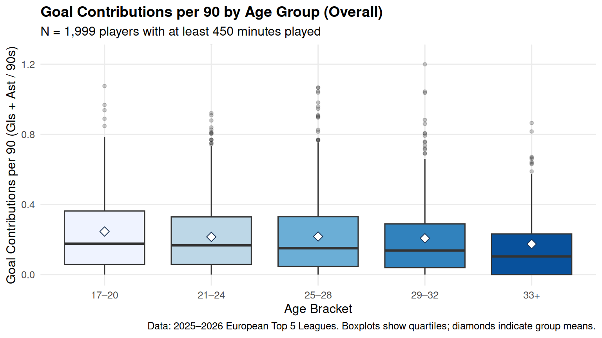
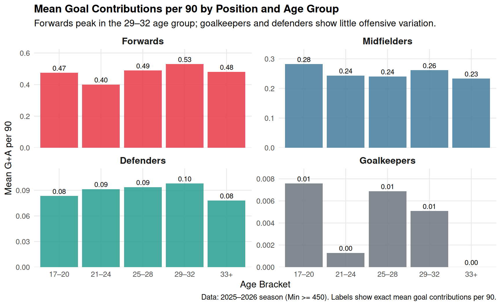

When Does Performance Peak?
Investigating Peak Age in European Soccer
A central question in sports analytics is identifying when athletes reach their peak competitive performance. Using data from Europe’s top five leagues during the 2025–2026 season, this analysis examines how offensive output relates to age among regular contributors.
To prevent small playing-time samples from skewing the metric, we restrict our sample to players who accumulated at least 450 minutes (equivalent to five full 90-minute matches). This leaves 1,999 qualifying player observations.
Players are grouped into five standard career stages: 17–20, 21–24, 25–28, 29–32, and 33+.
Aggregate Performance Across Age Groups
At first glance, an unstratified comparison suggests that overall goal contribution rates remain fairly flat across early adulthood before tapering in older age brackets.
Across all positions combined, the mean goal contribution rate is 0.25 per 90 for players aged 17–20 (\(n = 204\)), 0.22 for ages 21–24 (\(n = 644\)) and 25–28 (\(n = 678\)), 0.21 for ages 29–32 (\(n = 339\)), and 0.17 for players 33 and older (\(n = 134\)).
Accounting for Tactical Position
Looking strictly at overall numbers hides a substantial confounding variable: playing position. Different positions have fundamentally different tactical duties and age curves.

Analysis & Key Findings
When we disaggregate by position, the true offensive trajectory becomes clear. For forwards, who carry primary responsibility for goal creation, productivity actually peaks in the 29–32 age bracket with an average of 0.53 goal contributions per 90 minutes, compared to 0.49 for ages 25–28, 0.40 for ages 21–24, and 0.48 for veteran forwards aged 33+. Midfielders remain remarkably consistent throughout their twenties and thirties (averaging between 0.23 and 0.28 G+A per 90), while defenders (0.08–0.10) and goalkeepers (near zero) have low goal involvement regardless of age.
The apparent decline in the aggregate graph is largely an artifact of positional composition. Goalkeepers make up 19.4% of all qualifying players aged 33+, but represent under 2% of players aged 17–20. Because goalkeepers and central defenders have longer careers than outfield sprinters, older age brackets naturally contain a much higher proportion of defensive players who rarely score, depressing the overall group average.
Limitations & Causal Considerations
It is essential not to interpret these empirical patterns as proof that age directly causes changes in soccer performance:
- Selection & Survivor Bias: Older players who continue earning regular playing time (450+ minutes) in Europe’s top five leagues are elite survivors. We only observe the veterans good enough to stay in top leagues, not those whose performance declined and transferred to lower divisions.
- Measurement Limitations: Goals and assists measure direct offensive end-product, but soccer performance involves press resistance, positioning, defensive recoveries, and stamina—attributes that may peak at different ages.
- Single-Season Cross-Section: These data represent a single season snapshot (2025–2026) rather than a longitudinal cohort tracking individual athletes over their entire careers.
Data Source
Data was retrieved from Kaggle: Football Players Statistics (2025–2026) by Hubert Sidorowicz, sourced from FBref.